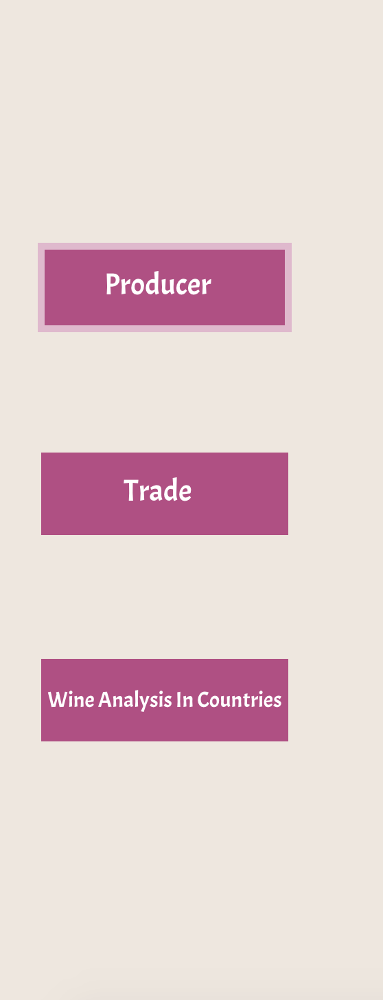
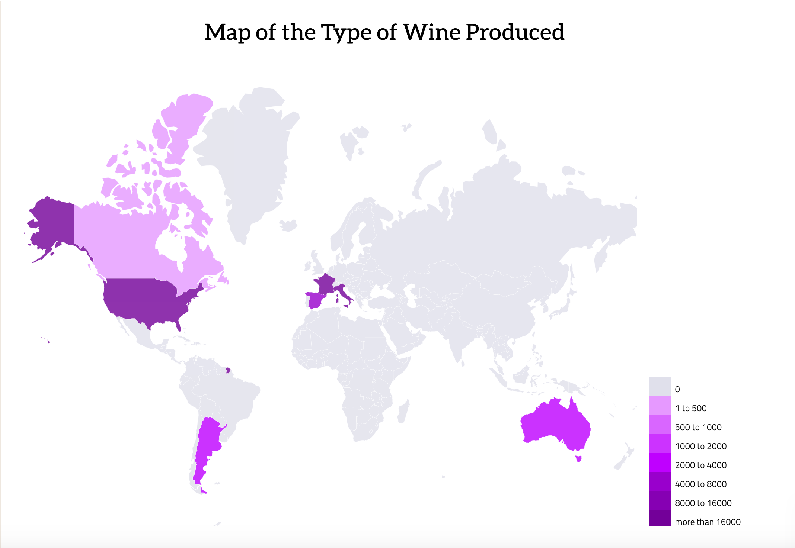
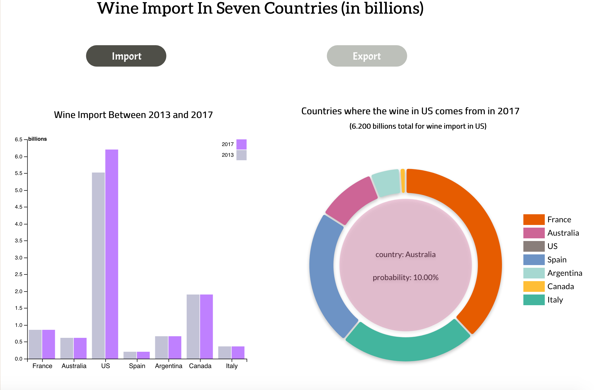
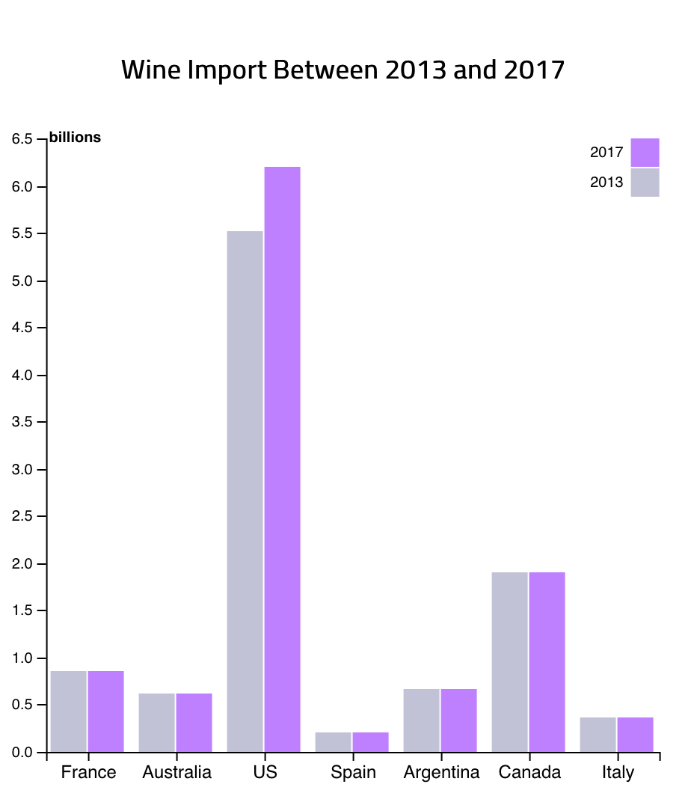
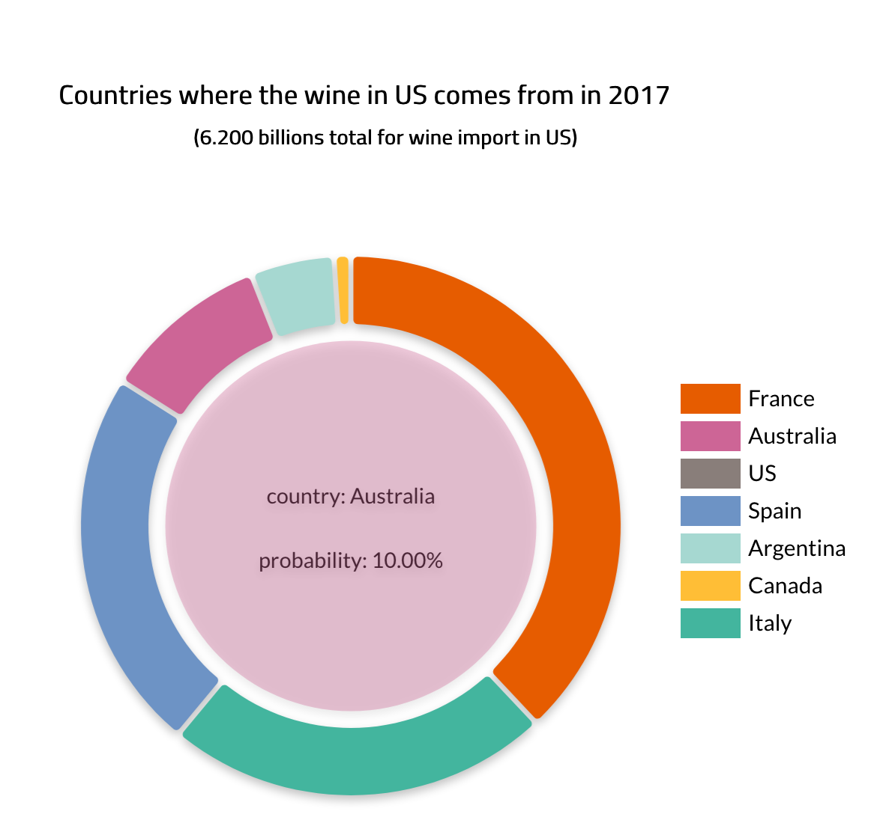
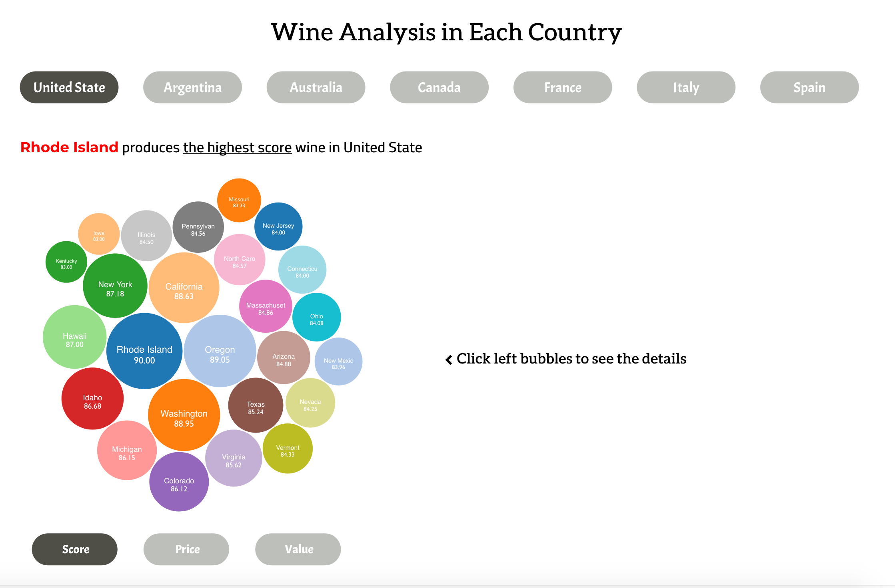
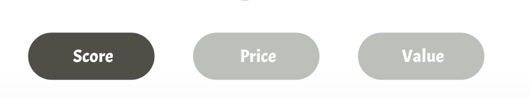
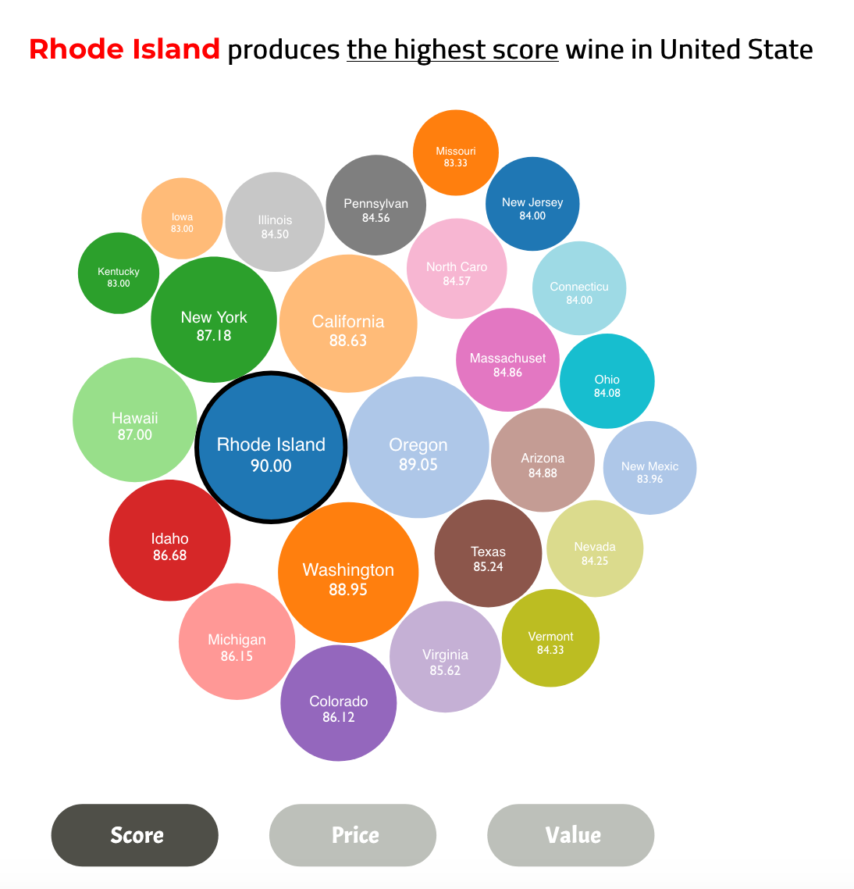
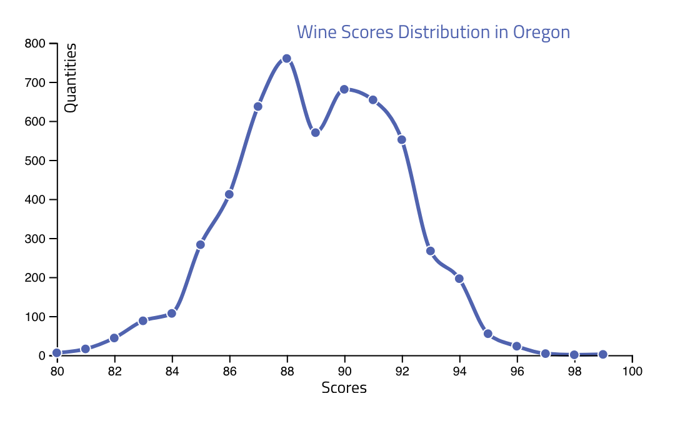
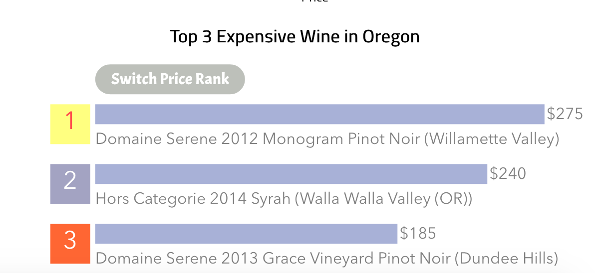

Overview and Motivation
Wine has, more than any other drink, the ability to imbue its consumer with pleasure by the senses of sight, smell, taste and touch like no other drink. Wine is always attractive and popular to most people. However, how to choose a wine suitable and taste good is always a big challenge to people, especially to beginners. What we want to do is help user to know about the basic information about wine such as which wine is evaluated the best and which region or which brand produces the best wine.
Questions
- Which country produces the most types of wine?
- How about wine trade between these countries?
- Which region produces highest scores/price/value of wine?
- Which is the highest scores/cheapest/most expensive/best value wine in a specific region?
Data
DataSet1: wine review
link:data_review and our secound data http://www.worldstopexports.com
This dataset contains about 130,000 wine information including country, description,score，orice, province,region,name, taster and so on.
Dataset2: wine trade
link:http://www.worldstopexports.com
this dataset contains the main wine export and import countries and and trade amount between these countries.
Data Exploratory
After cleaning the dataset1, we keep 99882 wine information. We do some aggregate work and group them by country. Finally,we found that all these wine information are from 7 countries.
| country |
number of wine |
| Argentina |
3211 |
| Australia |
2082 |
| Canada |
256 |
| France |
21,351 |
| Italy |
19382 |
| Spain |
6502 |
| US |
54,226 |
According to the data, we decide to pay the most attentin to the wine of USA since there are half data is from USA. We then group the wine in one country by state/province and get the statistic data of wine in each state. We plan to add more aggregate data such as mean score/ mean price of wine in each state to fit our request. But now, we only need the number of wine in each state.
From the second dataset, we get the trade data from countries and import and export data.
For now we have following data files:
-
map data
example: world_contries.json, map-USA.json
this kind of data is for map generation which
-
regions of each countries
example:USA_region.tsv, CountryID_region.tsv
These data is for us to do the analysis for each country, we want to analyze and rank the wine of each state in specific country. For now, it only contains the number of wine in each state/province. We plan to do more aggregate calculation to get more data such as the mean point, mean price of wine to fit our request.But now, we only need number of wine to do visualization.
-
wine information in each country
example:CountryID.json
These file contains the detail information to each wine in the specific country. We keep all the information we need for the analysis to these wine
-
wine trade data
example: wine_export.csv
We get this file from our second dataset which is for visualization of wine trade
Design Evolution
After countinue update, we finally focus on two point:
- User can see all the graph in one screen without scrolling down.
we change our design multiple times to make sure that our user will not ignore all the graphs.
To ensure that, we make all the graph in one 100% screen, and add a lot of tip to guide user to use our website.
- All the graph in one section has interaction.
In each section, We make sure that all the praphs has strong interaction so that user can see the update of these graphs if they click the button or the bar.
Implementation
1.Left Side Selection Part
We seperate all our visualization into three parts: "Producer", "Trade" and "Wine Analysis in Countries".
To make sure all the graphs could be put in suitable place and user will not ignore any of them, we set three section.
User could use button on the left side to access different section

2.Producer Section
The Producer part is a world map and
we use world map to display which country produces the larger amount of types of wine with darker color or the vice versa.
When a user moves the mouse over a country, a tooltip will display the country name and the total wine types in this country.

3.Trade Section
From the world map and the pie chart, users can easily understand which country produces the largest amount of wine, so we want to present whether these countries also has largest export of wine or import of wine. This chart can make users know how much a country earn profits from the export of wine and how much a country spends on the import of wine.

3-1.bar Chart
The bar chart is to show the import/export wine between 2013 and 2017 based on the dataset we have. This chart will tell users about the increment and decrement of wine trade between these countries. And when you click the bars, it will show a pie chart about where the wine (in billions) goes to or comes from. Following is the image to show an example about the bar chart.

3-2.Pie Chart
When users clicking one of the bar in bar chart, it will show up a pie chart on the right side. It will show the percentage of where the wine comes from or goes to in this specific country. So, users can gain some information about the wine trade between these countries.

4.Wine Analysis Section
This section is about the detail analysis in each country
In this section, we have three graphs with strong interaction

The relization of interaction among three graphs is using the interaction button at the bottom(Socre, Price and Value)

4-1.Bubble Chart
bubble chart is designed to display the wine information of each state
Through the button on the bottom, people could know about the average score, price and value of wine in each state.
The size of bubble is related to the value of the state

4-2.Distribution Chart
Distribution chart is designed to display the score, price, and value distributio in each state.
Same, distribution chart will be switched according to the interaction buttons.

4-3.Top 3 Rank Chart
Rank chart is designed to display the highest score, price, and value in each state.
Same, Rank chart will be switched according to the interaction buttons.

Evaluation
-
Learn From Data through Visualization
Through our visualization: we know about a lot of detail information about wine such as the wine pruduce of each country, the trade between different country and average quality, socre and value of wine in each state.
-
Answers to the questions
All questions we ask get answer:
-
Which country produces the most types of wine?
The American produce most types of wine, which is 54,226.
-
How about wine trade between these countries?
People can get clear information from our Trade Section.
-
Which region produces highest scores/price/value of wine?
In America:
- Wine prudeced in Rhode Island wins the highest score, which is 90
- The average price of Wine produced in California is the highest, which is $39.04
- The average price of Wine produced in Ohio is the lowest, which is $13.75
- The average value of wine is Idaho, which is 7.34
-
Which is the highest scores/cheapest/most expensive wine in a specific region?
You can get this answer through ranking chart.
-
evaluation of visualization work
Our visualization work very well with no bug. It takes about 0.5 seconds to load the data and will not influence website working.
-
Future work
- We want to improve the color on world map. After continue update, we thought the original color design is not suitable now.
- We want to improve our code quality, to make them more robust.
Schedule Book
- Nov 4th: complete the data set wrangling, check the quality of data and choose part of data for the prototype(finished)
- Nov 11th: geographical map of the whole world and each country for MileStone 1(finished)
- Nov 18th: ranking charts,percentage chart(finished)
- Nov 25th: sunburst chart(change to import-export chart and finished)
- Dec 2nd: all project and fix all the small bug(finished)
- Dec 15th: evaluation work and prepare the final presentation(finished)
- Dec 19th: final presentation(finished)